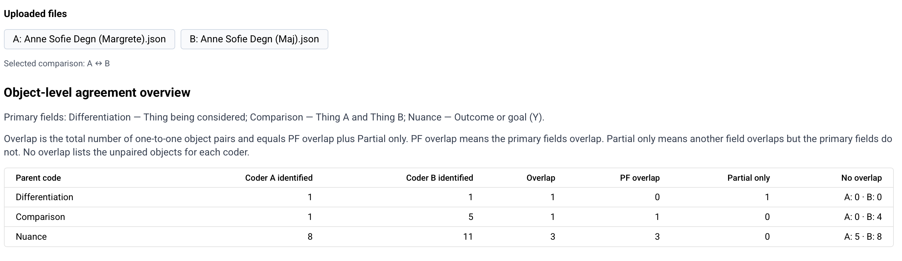

Emne: Opdateringer til kodningen i SRT Coder og næste skridt
Hej alle
Jeg har opdateret SRT Coder med nogle ændringer, som skal gøre kodningen og sammenligningen af analyser mere overskuelig.
Ved overgangen til den nye version tager programmet først en verificeret sikkerhedskopi af de eksisterende analyse- og kodningsfiler. De oprindelige filer bevares uændret, og de nye data tages først i brug, når migreringen er valideret. På den måde risikerer vi ikke at miste tidligere kodet data.
Sådan læser I sammenligningen
Nedenfor kan I se sammenligningen af jeres kodning af interviewet med Anne Sofie Degn. A er Margrete, og B er Maj.

Kolonnerne Coder A identified og Coder B identified viser, hvor mange koder hver af jer har fundet. Overlap er det samlede antal kodningspar, som programmet kan forbinde, og er summen af PF overlap og Partial only. PF overlap betyder, at kodernes primære felter overlapper. Partial only betyder, at der er overlap et andet sted i kodningen, men ikke i det primære felt. No overlap viser de koder, som kun er fundet af den ene af jer.
I denne sammenligning har I begge fundet én Differentiation. De overlapper delvist, men ikke i det primære felt. Margrete har fundet én Comparison, mens Maj har fundet fem. Den ene går igen hos jer begge med overlap i det primære felt, mens Maj har fire yderligere. For Nuance har Margrete fundet otte og Maj elleve. Tre af dem overlapper i det primære felt, mens fem af Margretes og otte af Majs ikke er blevet parret med en kode hos den anden.
Jeg har kigget kodningerne igennem. Overordnet synes jeg, at det giver os et rigtig godt og konkret grundlag for den næste afstemning. I en del af Majs ekstra Comparison-koder er det dog ikke helt klart for mig, hvad der er X og Y – altså hvilke to ting der præcist bliver sammenlignet. Det betyder ikke nødvendigvis, at observationerne ikke er relevante, men det er et godt sted at få skærpet vores fælles kriterier.
For Nuance er der nogle af de ekstra kodninger, som jeg er enig i, og andre, som jeg ikke selv ville have kodet. Det er også helt forventeligt på dette tidspunkt, og netop den slags konkrete eksempler kan hjælpe os med at blive endnu mere enige om, hvor grænsen skal gå.
Jeg vil derfor gerne foreslå, at vi fortsætter som planlagt:
I kan ellers starte programmet og arbejde som normalt. Kontakt mig gerne, hvis noget ser forkert ud, eller hvis I oplever problemer med kodning eller sammenligning.
Bedste hilsner
Arthur